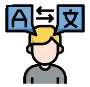
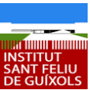

I am a 21-year-old student with a solid background in programming and computer software knowledge, which allows me to easily adapt to different technological environments. I have experience working in teams and understand the importance of good coordination and communication to achieve common goals. I am characterized by being approachable and respectful, as well as by my ability to listen and express myself clearly. I maintain a calm and curious attitude, always willing to learn and take on new challenges with responsibility and commitment.
ABOUT ME
MY CONTACT
Phone: (+34) XXX - XXX - XXX
Email: polcanadascosta@gmail.com
Address: Carrer Comerç 98, 17220
Sant Feliu de Guíxols

LANGUAGE SKILLS
GERMAN
Beginner
FRENCH
Intermediate B2
ENGLISH
Expert C1
CATALAN
Native
SPANISH
Native
EDUCATION
Universitat de Girona
Bachelor’s Degree in Computer Engineering
(2022 - Present)
Institut Sant Feliu de Guíxols
Baccalaureate specialized in Technology
(2020 - 2022)
Graduated with academic honors (exceptional awards)

NOTABLE EXPERIENCE
Developer of LLM Multi-Agent Environments
for the EXIT Research Group
(2025)
This work required a respectful, empathetic, and approachable manner with people, as well as reasoning ability and sensitivity toward diverse situations. It also required working in coordination with other volunteers, always maintaining a responsible and discreet attitude. Thanks to this experience, I developed my communication and teamwork skills, and it became my first professional engineering experience.
Creation of a Software Program for the
Pedagogical Association ONA
(2022)
To carry out this project, I listened to the needs of the boys and girls of the association to design a useful and accessible solution. It required empathy, analytical ability, and communication with the educational team. Overall, it was a great opportunity to apply technical knowledge in a real and social environment.